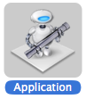

Just been surfing the net and came across this handy little tool, fTerminal, for opening the finder window in the terminal
http://www.hiddenelephant.com/blog/2009/05/11/quick-jump-from-finder-to-terminal/
One problem, I downloaded, unzipped and had the
and when I tried to run it
"You can't open the application fTerminal - PowerPC because PowerPC applications are no longer supported."
So let's create a new Automator Application.

Search for Automator and choose Run AppleScript

Now add your code on run {input, parameters} (* Your script goes here *) return input end run
Maybe you want to add an Icon to the Application: http://apple.stackexchange.com/questions/369/can-i-change-the-application-icon-of-an-automator-script
After the script has been created do the following :
- Find the icon you want
- Get Info of the icon file (cmd-i)
- Click on the icon inside the info window
- Copy it (cmd-c)
- Get Info of the application (cmd-i)
- Click on the icon inside the info window
- Paste the icon in the clipboard (cmd-v)
This method works for every files in Mac OS X.
Can be done with a service:
System Preferences > Keyboard > Keyboard Shortcuts > Services
Enable New Terminal at Folder New Terminal Tab at Folder